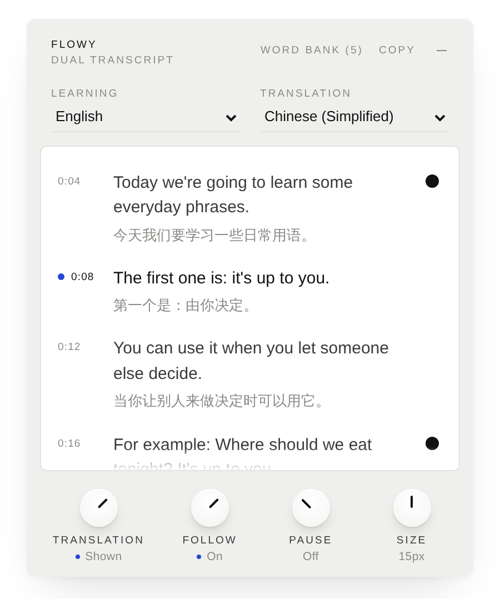
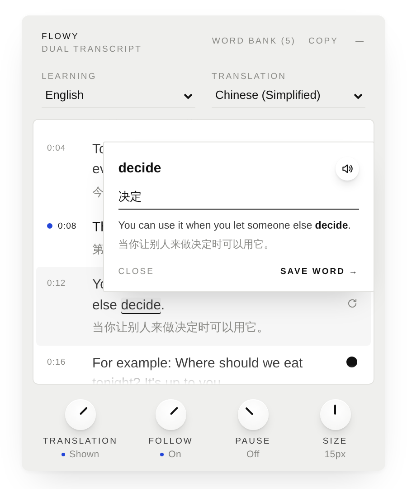
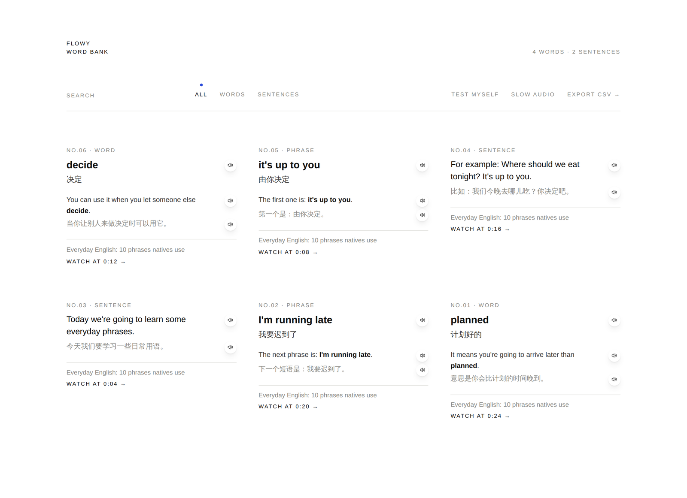

Flowy
Learn a language by watching what you already watch. Flowy puts a YouTube video's own transcript next to your language, line by line, and keeps the words you want to remember with the sentence they came from.

Two transcripts
The original captions and a translation, line by line, following the video as it plays.
Your pace
Loop one line, pause after every line, or blur the translation until you're ready to check.
Keep what matters
Click a word, drag across a phrase, or keep a whole sentence. Each one keeps its example from the video, in both languages.
Hear it
Every saved word and sentence can be read aloud, at normal or slow speed.
Word Bank
One quiet page for everything you've saved. Test yourself, jump back to the moment in the video, or export to Anki.
Stays yours
No account, no server, no tracking. Everything is stored in your own browser.

- Download Flowy and unzip it.
- Open
chrome://extensionsand switch on Developer mode. - Click Load unpacked and choose the unzipped folder.
- Open any YouTube video with captions. Flowy appears on the right.
Works in Chrome on desktop. English → Chinese by default; any caption language and any language YouTube can translate into.
